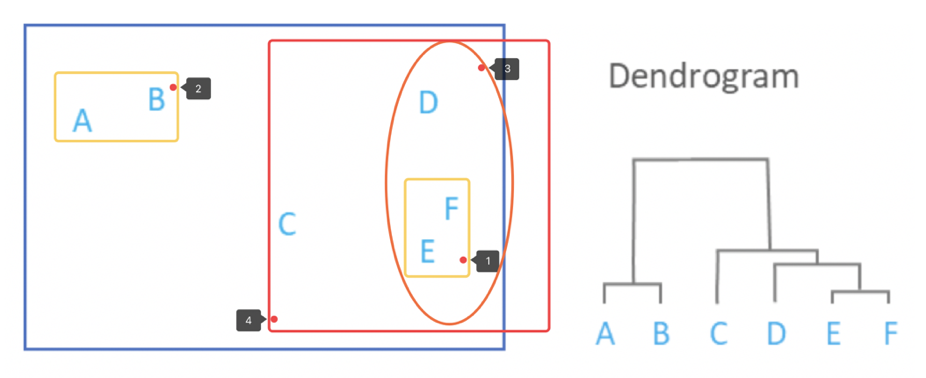
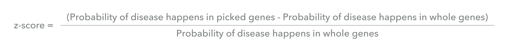

Hierarchical clustering
Group Similar Objects into Clusters
Treat each object as a cluster > Identify two closest clusters > Merge

Mantel test
Evaluate Correlation Between Distance Matrix
Quantitative measurement of similarity between two Hierarchical Clustering Results
Null Hypothesis: No Relationship Between Two Matrix
Shuffle the order of rows and columns of one of the two matrices
Pearson Correlation
Coefficient, P-value

PCA
Accurate Data Representation
Preserves maximum variance and the minimum error
Interpretation of Principal components

Gene-Disease enrichment analyze
Gene-Disease DataBase
z-score> 1
